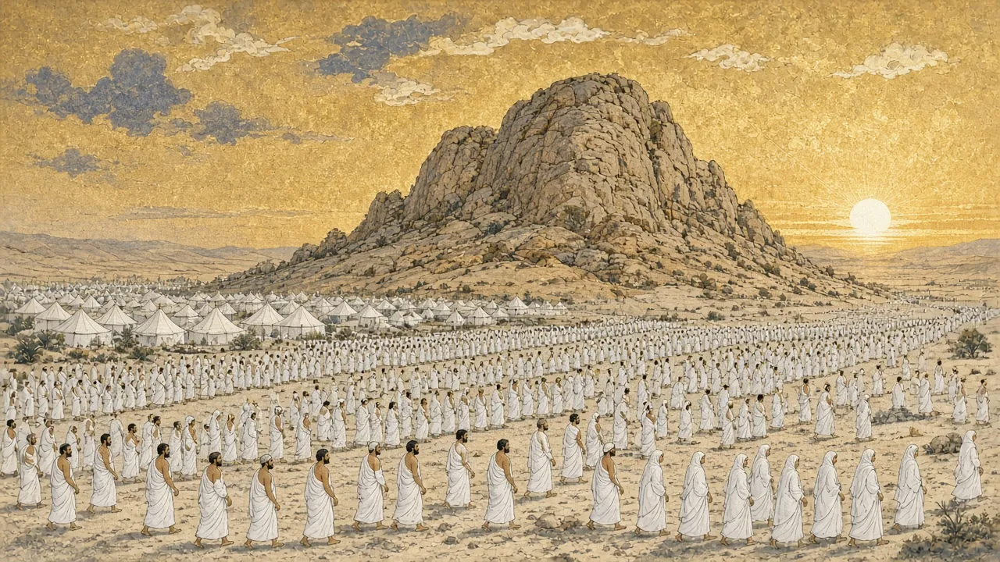
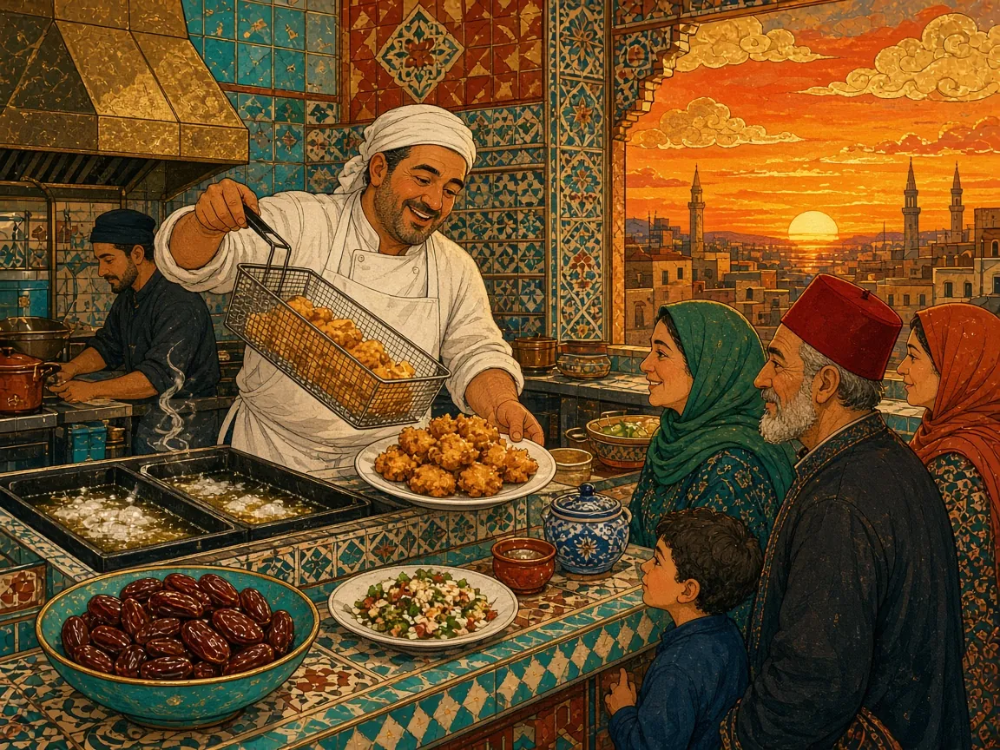
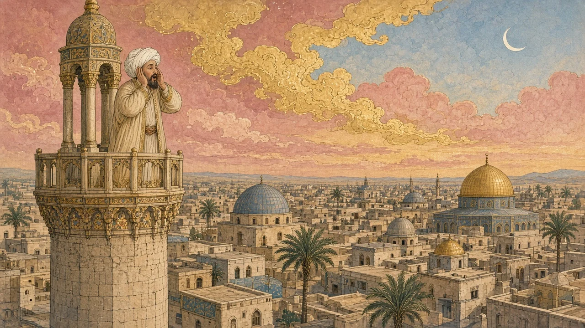
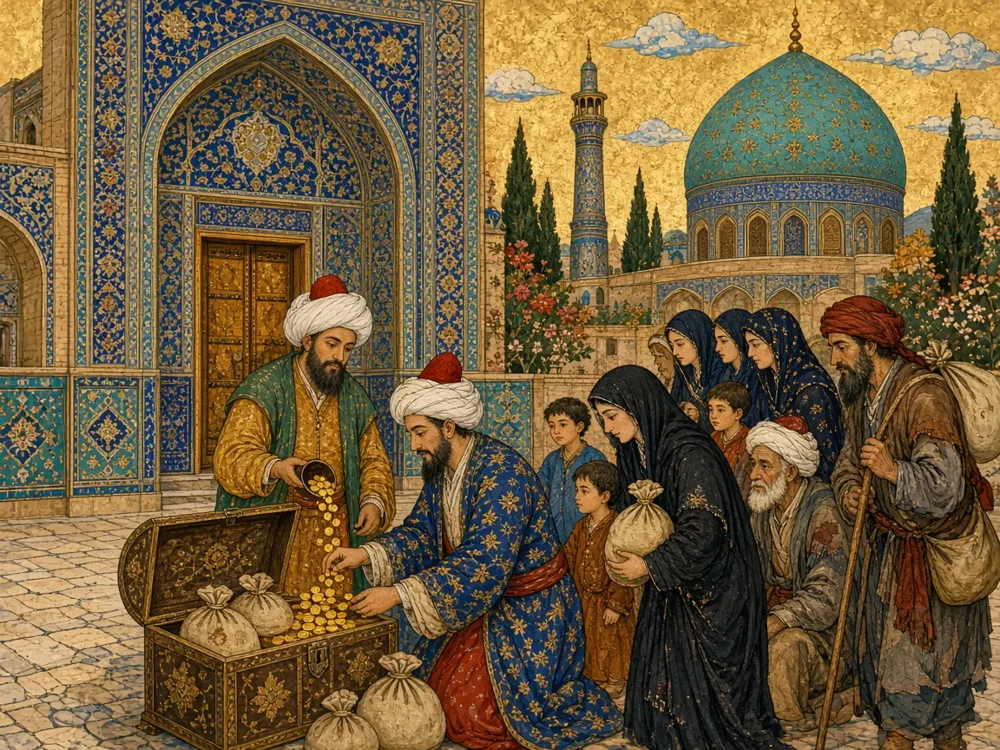
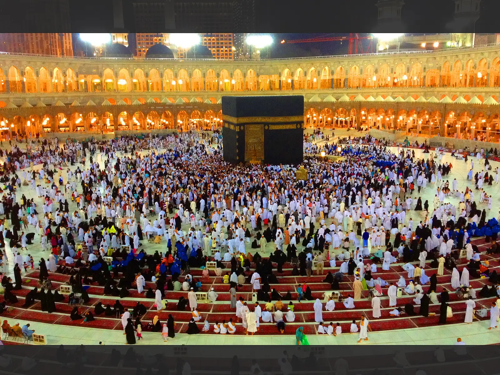
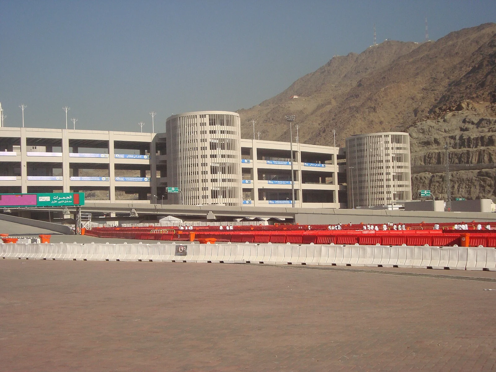
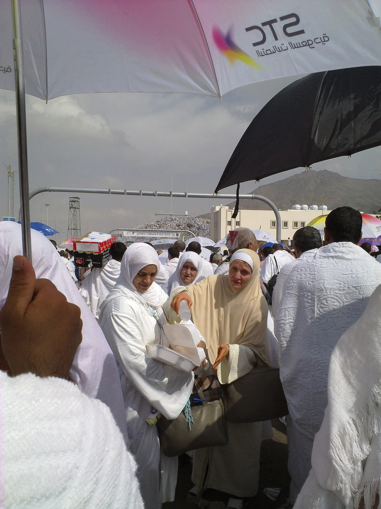
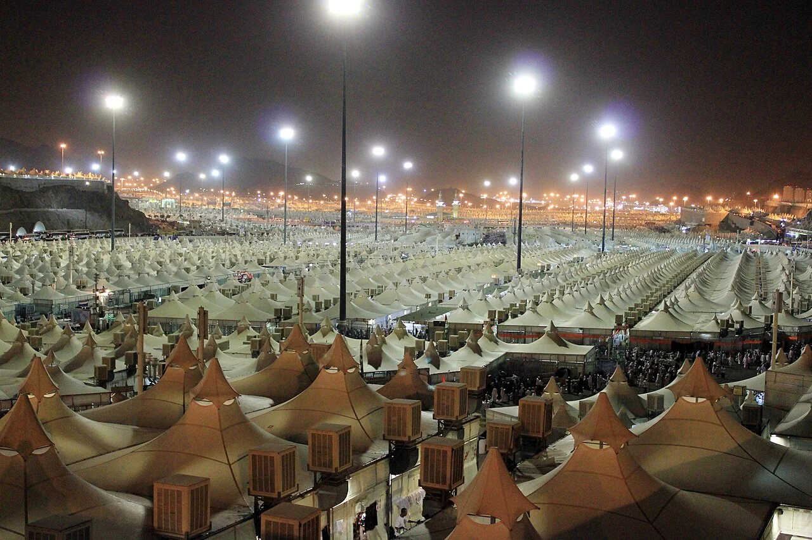
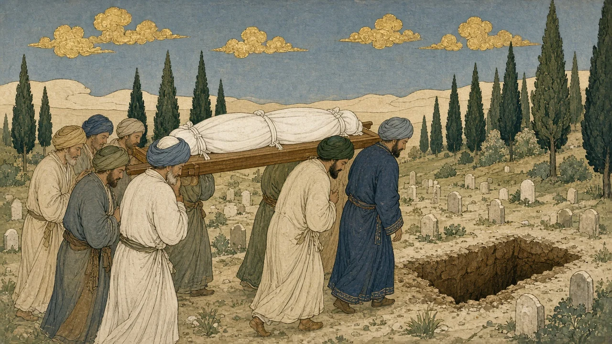

Background essay for Lecture 4 · PHIL 210 World Religions · Chapter 12: Islam · Steven Austin
This essay is the full written version of Lecture 4. It follows the lecture from beginning to end and includes the required independent study, placed where each topic belongs, so that the whole lecture can be read as one continuous account. Page numbers in parentheses refer to Robert E. Van Voorst, RELG: World, 4th edition, Chapter 12. Material from outside the textbook is marked as such, and the notes at the end give its sources. Where the textbook reports what Muslims believe, the essay says so.

The chapter calls Islam “primarily a religion of action, not of belief” (p. 316). Lecture 3 covered what Muslims believe; this lecture covers what they do. The core practices of Islam form what Muslims call the Five Pillars: the confession of faith, prayer, fasting, almsgiving, and pilgrimage to Mecca (pp. 315–316).
Think of the lecture as a camera that keeps zooming out. It starts with one sentence whispered into a newborn’s ear, the shahada. Then it widens to the prayers said five times a day, wherever a Muslim happens to be, and to the Friday service in the mosque. Then to a whole month of fasting shared by a whole community, and to the charity that ties rich and poor together across a nation. Finally it reaches the pilgrimage to Mecca, where millions of people from every nation stand together on one plain. You will answer two review questions along the way: what happens during salat (Review Question 9) and why zakat is so important (Review Question 10).
The painting above shows that last scene: pilgrims in white moving toward the Mount of Mercy on the Plain of Arafat at sunrise. This essay also covers the Muslim funeral, which the chapter treats right after the pillars.1
1. Fasting Among the Fryers

The chapter opens its section on worship in Dearborn, Michigan, home to one of the largest Muslim populations in North America (p. 315). Hussein Elhaf is getting ready for Ramadan, the annual month-long fast observed by Muslims around the world.
Here is his challenge. His family owns a restaurant with a mostly Muslim clientele, so all through Ramadan he works around food, but he will eat and drink only between sunset and sunrise. The restaurant serves food in daylight hours for non-Muslim customers, and after sunset it is crowded with Muslims taking their main meal of the day until 11:00 P.M. Fasting while working with food and drink all day won’t be a struggle for him, he says: “it strengthens my faith and brings me closer to God” (p. 315).
Notice what he says the fast does: it is not mainly about hunger, but about closeness to God. Keep that in mind for every pillar in this lecture. The chapter says the core practices of Islam are “all related to worship and ritual” (p. 316). They are ways of submitting the whole of life, body and schedule and money and travel, to God.2
2. What Makes a Pillar?
The chapter observes that the study of religion in our time has reaffirmed the importance of core practices of worship: stating one’s beliefs, prayer, giving, occasional fasting, and others. In Islam these core practices are all related to worship and ritual, and they form what Muslims call the Five Pillars of Islam: confession of faith, prayer, fasting, almsgiving, and pilgrimage to Mecca (p. 316). Learn their Arabic names: shahada, salat, sawm, zakat, and hajj.
Two cautions from the chapter. First, the notion that Islam has pillars is not in the Qur’an or the hadith, although Muslims view it as faithful to what those sources say about these five obligations. Second, the pillars are “essential but not exhaustive”: they are the foundation, not the whole building. Islam asks much more of a Muslim, as Lecture 5 on Islamic law shows (p. 316).
The glossary defines the Five Pillars as Sunni practice. Shi‘as generally recognize ten pillars, with particularly Shi‘a additions in the second group of five (p. 316); a later section, “Shi‘a Practice: Ten Obligations,” covers them. The picture of a building on pillars is a good one: take one away and the structure is weakened.3
3. La ilaha illa Allah
The first pillar is built on the foundational rock of Islam. Although Islam is primarily a religion of action, the first pillar is a statement of belief. The shahada (shah-hah-DAH) is the confession of Islam; “confession” here means a formal statement of faith, not a confession of sin. In Arabic it is resonantly poetic: La ilaha illa Allah, Muhammad rasul Allah (p. 316). It is among the shortest formal confessions of any world religion. It is not found in the Qur’an in this exact form, but its two parts are often repeated there separately.
Translation matters. It is sometimes rendered “There is no god but Allah,” but in Arabic the second and fourth words are both Allah, so “There is no god but God” is better (p. 316). A monotheist of any religion can recite the first half. The second half connects monotheism to Islam: saying “Muhammad is God’s prophet” means submitting to all God’s commandments as given through him, the rasul, the final messenger.
The shahada frames a Muslim’s life. Newborns hear it whispered; converts repeat it as their own; it is said in every prayer; and it should be a Muslim’s last words (p. 316).4
4. The Call to Prayer

God is great. [4 times] / I bear witness that there is no god but God. [2] / I bear witness that Muhammad is the prophet of God. [2] / Make haste to prayer. [2] / Make haste to success. [2] / God is great. [2] / There is no god but God. [1]
The most common pattern of the call, p. 317
Prayer is the main, regular form of Muslim worship, so the chapter treats it more fully than the other pillars (p. 316). It begins with a sound. A mosque, from masjid, “place of prostration,” typically has a tower called a minaret, with a balcony from which the muezzin, or caller, summons the people to prayer. Today this is often done through loudspeakers (pp. 316–317).
Read the words of the call quoted above, the most common pattern according to the chapter (p. 317). It is the shahada set to music, framed by “God is great,” and followed by an invitation: “Make haste to prayer. Make haste to success.” Prayer, in other words, is success. Just before prayer time the muezzin, or his recorded voice, gives the call in a melodic chant heard throughout the neighborhood.
Visitors to Muslim countries notice it. The chapter’s author recalls being startled awake as a college student in Amman, Jordan, by the dawn call on a loudspeaker next door to the rooftop where he was sleeping (p. 317). The painting imagines a muezzin at dawn before loudspeakers; the key terms below describe the call today.5
5. Inside the Prayer Hall

Step inside. The main part of the mosque is the prayer hall, an open room often with abstract decoration on the ceiling or walls. The chapter lists what it does not have: no pictures, statuary, incense, altars, or marked-off areas such as the sanctuaries of other world religions have (p. 317). Compare a Catholic church or a Hindu temple, and the difference is striking. Nothing stands between the worshiper and God.
To enter, worshipers remove their shoes and wash. Then they form straight lines facing a niche at the front of the hall. The niche shows the direction toward Mecca, the qiblah (KIB-luh), toward which prayer and the whole service are oriented. The straight rows also signify to Muslims the equality of all people before God: rich and poor stand shoulder to shoulder (p. 317).
Mosques typically have a pulpit where the imam preaches at the Friday noon service, and a few copies of the Qur’an on wooden stands. The photograph above shows the niche, called the mihrab, and the carved wooden pulpit, the minbar, in the Great Mosque of Kairouan in Tunisia; the pulpit, from the 800s, is one of the oldest in the world.6
6. Clean Before God

Before prayer comes washing. The chapter says Muslims prepare for prayer by ritual washing: hands, feet, eyes, ears, nose, and mouth are rinsed three times with water (p. 317). The painting above shows the scene in many mosque courtyards: a fountain, worshipers washing, and rows of shoes. Outside the textbook, this washing is called wudu. If no water is available, Islamic law allows a symbolic washing with clean earth.
Why wash? Not because the body is dirty in a hygienic sense, but because a person approaches God in a state of purity. The outward washing is a sign of an inward readiness. You saw a similar idea in the Hajj pilgrim’s preparations in Lecture 1.
The chapter then explains the separation of men and women. When women pray in the mosque, they are out of the men’s sight, in back of them or in a separate room. The reason given is the preservation of the dignity of women: because the prayer involves bowing and prostration, it would be unseemly in traditional Muslim cultures for men to line up alongside or behind women making these movements. If a man touches a woman in the mosque, even accidentally, he must go out and wash again (p. 317). Practices vary among mosques today, and Lecture 5 discusses debates about women’s roles.7
7. Salat, Step by Step

Now the prayer itself. Here are the anchor sentences for Review Question 9. “Each observant Muslim says the ritual prayers called salat five times a day: at sunrise, at noon, in midafternoon, at sunset, and one hour after sunset” (p. 316). And: “Salat is a formal ritual with both postures and recitation” (p. 317).
The sequence is tightly structured in both words and actions; personal, spontaneous prayer is not part of salat. Everyone moves together, led by the imam. People begin standing and, in the chapter’s words, “cup their ears with their hands, showing God that they are present and listening.” Al-Fatihah is spoken as a prayer, followed by other prescribed words. Then the body moves: bowing, standing, kneeling, prostrating with forehead to the ground, kneeling, prostrating, and standing again. The prayers are said in a quiet, humble voice, while the leader calls out “Allah” to mark each change of posture (p. 317).
The postures, the chapter says, remind Muslims in a physical way of their submission to God. Depending on the number of repetitions, the daily prayers take five to ten minutes (p. 317).
Review Question 9 (pp. 316–317): What happens during the ritual prayer known as salat? Anchor sentences, word for word: “Each observant Muslim says the ritual prayers called salat five times a day: at sunrise, at noon, in midafternoon, at sunset, and one hour after sunset.” (p. 316) and “Salat is a formal ritual with both postures and recitation.” (p. 317)8
8. Friday Noon

Most of the five daily prayers can be said anywhere, alone or with others. Friday is different. On Friday afternoons, special prayer services in the mosque feature a sermon preached by the imam (p. 317). The whole service is typically the best-attended service of the week and lasts between thirty and sixty minutes (p. 318). You met one Friday preacher in Lecture 3, Imam Yassir Fazaga in Orange County. Friday is not a day of rest in the way the Jewish Sabbath or the Christian Sunday traditionally were; Muslims gather for the prayer and may go back to work afterward, although many Muslim countries make Friday part of the weekend.
The chapter adds a political note. It was after Friday noon prayers in the first months of 2011 that worshipers poured into the streets to demand change from unresponsive, authoritarian governments in many Arab nations, at the start of the Arab Spring (p. 318). A weekly gathering of the whole community is also a ready-made crowd, which is why some governments keep a close eye on Friday sermons.
The photograph above shows the DITIB Merkez Mosque in Duisburg, which the chapter pictures during a Friday sermon and calls the largest mosque in Germany (p. 317).9
Chapter 12 Review Question 9
What happens during the ritual prayer known as salat?
Write your answer to Review Question 9 now. This is a “what happens” question, so the best answer walks through the prayer in order.
Start with when: the five times of day from the first anchor sentence, and the rule that prayers are said wherever one is. Then the preparation: the muezzin’s call from the minaret, the ritual washing of six body parts three times, removing shoes, and forming straight rows facing the niche that marks the qiblah, with women out of the men’s sight.
Then the prayer itself, using the second anchor sentence: a formal ritual of postures and recitation, done together under the imam’s lead, with no spontaneous personal prayer. Describe the opening gesture, the recitation of al-Fatihah, and the sequence of bowing, kneeling, and prostrating, with the leader’s call of “Allah” marking each change. Explain what the postures mean: physical submission to God; and what the rows mean: equality.
Finish with the Friday noon service and its sermon. The anchor sentences are on pp. 316 and 317.10
9. Sawm: The Ramadan Fast

In commemoration of Muhammad’s receiving the Qur’an, Muslims are required to observe fasting, called sawm (sahwm) in Arabic, during daylight hours throughout the month of Ramadan. It is designed to cultivate greater submission to God. Not a bit of food or drink may be taken for the entire daylight hours; some particularly pious Muslims won’t even swallow their own saliva. Sexual intercourse during daylight is also forbidden, as are some kinds of amusement. Eating, drinking, sex, and smoking are permitted at night (p. 318).
Like all the pillars, the fast is done in a humane way. Infants and young children are excused at their parents’ discretion, though many schoolchildren keep it. The sick, the infirm elderly, and soldiers on active duty may fast later when they are able, and when it is impossible to make up the fast, a significant act of mercy or charity can substitute (p. 318).
The painting above shows the moment everyone waits for: sunset, when families break the fast, traditionally with dates and water, as in Hussein Elhaf’s restaurant. When the month ends, Muslims celebrate Eid al-Fitr with a special service in the mosque; families feast together during the day and exchange gifts in decorated homes (p. 318).11
10. Ramadan’s Moving Calendar

Why does Ramadan sometimes fall in winter and sometimes in summer? The chapter explains: because leap days are not inserted into the Muslim lunar calendar, Ramadan moves through the seasons (p. 318). When it falls in winter, fasting is comparatively easy. But when Ramadan falls in the longer, hot days of summer, it calls for much more effort, especially since most Muslims live in tropical or subtropical lands (p. 318).
Here is the arithmetic, which comes from outside the textbook. Twelve lunar months add up to about 354 days, roughly 11 days shorter than the solar year. So each Ramadan begins about 11 days earlier than the one before, and the fast travels all the way around the solar calendar in about 33 years. A Muslim who lives to old age will fast in every season more than once. The next Ramadan, in the year 1448 AH, is expected to begin about February 8, 2027, though the exact day depends on the sighting of the new moon and can differ by country. Recall from Lecture 1 that the calendar counts from the hijra.
The chapter also notes practical challenges. The hunger produced by the fast can be a challenge to learning for schoolchildren who keep it. Soldiers on active duty may fast when they are better able to do so (p. 318). The photograph above shows Muslim U.S. Army trainees praying together at Fort Jackson, South Carolina, during Ramadan in 2015, a summer Ramadan. The Army article that accompanied the photo described trainees fasting through basic training.
Think about Muslims in the far north, where summer daylight can last twenty hours. Scholars have debated whether they should follow local sunrise and sunset or the times of Mecca or the nearest moderate city; practice varies (outside the textbook).12
11. Zakat: 2.5 Percent

The fourth pillar is zakat (zah-KAHT), almsgiving. The Qur’an urges all Muslims to give generously to the poor, such as orphans and widows (for example, 2:43), but, as with the other pillars, it does not lay down specific requirements. Here is the first anchor sentence for Review Question 10: “The Shari‘a made this generosity a formal obligation with specific rules, and it has become so important that it is the fourth pillar of Islam, called zakat, almsgiving or charity” (p. 318).
How much? Zakat is one-fortieth, 2.5 percent, of the value of one’s assets, not counting necessary personal possessions such as homes, animals, vehicles, or clothing (p. 318). (The glossary says “income”; the text says assets.)
Who collects it? In most Islamic lands a representative of the umma, often a government department, collects it and distributes it to poor families, widows and orphans, stranded travelers, and others in need. In Europe and North America zakat is voluntary giving to a mosque or Islamic charity (p. 318).
Review Question 10 (p. 318): Why is zakat an important pillar of the Muslim faith? Anchor sentences, word for word: “The Shari‘a made this generosity a formal obligation with specific rules, and it has become so important that it is the fourth pillar of Islam, called zakat, almsgiving or charity.” and “Zakat has provided Islamic countries with the resources for comprehensive programs of social support and development that are unique among world religions and reinforce solidarity among Muslims of different classes.”13
12. Zakat and Social Justice
Why is zakat so important? The second anchor sentence for Review Question 10 reads: “Zakat has provided Islamic countries with the resources for comprehensive programs of social support and development that are unique among world religions and reinforce solidarity among Muslims of different classes” (p. 318).
Break the answer into three parts. First, scale: because every observant Muslim gives zakat, it generates large sums of money in the international Muslim community. Second, solidarity: it ties Muslims of different classes together. Third, justice: the chapter calls zakat “the principal way in which Muslim lands promote a fuller measure of social justice” (p. 318).
Connect this to Lecture 1. Muhammad’s earliest preaching in Mecca demanded generosity to the poor, widows, and orphans, aimed at a city where new trade wealth had left them behind. Zakat turned that prophetic demand into a permanent institution. In the next section you will see how zakat has come under suspicion in the United States since 2001.
Review Question 10 (p. 318): Why is zakat an important pillar of the Muslim faith? Anchor sentences, word for word: “The Shari‘a made this generosity a formal obligation with specific rules, and it has become so important that it is the fourth pillar of Islam, called zakat, almsgiving or charity.” and “Zakat has provided Islamic countries with the resources for comprehensive programs of social support and development that are unique among world religions and reinforce solidarity among Muslims of different classes.”14
13. Zakat Under Suspicion

You learned earlier that in Europe and North America zakat is voluntary giving through a mosque or an Islamic charity (p. 318). Near the end of the chapter, in its survey of Islam in North America, the textbook returns to zakat with a problem. The U.S. government has especially investigated Muslim charitable organizations that distribute abroad the funds raised from American Muslims, some of it from zakat. The chapter’s judgment is balanced: although some funds have indeed gone into “the shadowy network of terror,” the vast majority of funds do not, and many American Muslims are disturbed over this perceived interference in the exercise of a pillar of their religion (p. 324).
The chapter places this alongside another worry: the New York City police department’s monitoring of mosques from 2003 to 2014, which drew strong criticism, with the last of three major lawsuits settled in April 2018 (p. 324).
The best-known case, outside the textbook, is the Holy Land Foundation in Texas, once the largest Muslim charity in the United States. The government froze its assets in December 2001, and in 2008 a federal jury convicted its leaders of sending money to Hamas. Other charities were closed without convictions. Muslim donors became afraid that a gift made in good faith could put them under investigation, and many began giving through local mosques instead.
Think about the tension. Governments must stop money from reaching violent groups; believers must be able to practice a duty that the chapter calls the principal way Muslim lands promote social justice. The photograph above shows the Islamic Center of America in Dearborn, the city where this lecture began with Hussein Elhaf, a reminder that this debate affects ordinary congregations.15
Chapter 12 Review Question 10
Why is zakat an important pillar of the Muslim faith?
Write your answer to Review Question 10 now, in four or five sentences.
First define zakat and say where its rules come from: the Qur’an urges generosity, and the Shari‘a made it a formal obligation, the fourth pillar. Give the rate as a fraction and a percentage, say what it is calculated on, and list what is not counted. Say who collects it in most Muslim countries and who receives it, and how it works in Europe and North America.
Then answer the “why” directly with the second anchor sentence: the resources it provides for social support and development, which the chapter calls unique among world religions, and the solidarity it builds among Muslims of different classes. Add the chapter’s phrase about social justice. A sentence connecting zakat to Muhammad’s early message about widows and orphans will show you understand where it came from.
One caution for precision: the text says zakat is figured on assets, while the glossary says income. If you mention the difference, you show careful reading. Both anchor sentences are on p. 318.16
14. Hajj: Who, When, Where

The last of the Five Pillars of Islam is pilgrimage to Mecca. A Muslim is required to participate in the official pilgrimage, called the hajj (hahj), at least once in his or her lifetime. The requirement applies to both men and women, though traditionally the great majority of pilgrims are men (p. 318).
As with the other pillars, it is imposed humanely. One who is unable to make the pilgrimage may designate someone else to do it on his or her behalf (p. 318). Outside the textbook, Islamic law adds that the duty falls on those who are physically and financially able.
Timing matters. The last month of the Muslim calendar, called al-Hajj, is the official period of pilgrimage. Muslims can go to Mecca at other times when it is less crowded, but those visits are not considered a hajj (p. 318). Because the calendar is lunar, the hajj moves through the seasons, like Ramadan.
Why Mecca? Remember Lecture 1. Muhammad at first had his followers pray facing Jerusalem, and some Muslims made pilgrimages there. After his conflict with the Jews of Medina, he made Mecca, and particularly the Kaaba in the Grand Mosque, the geographic center of Islam (p. 318). The photograph above shows the Mount of Mercy on the Plain of Arafat, where pilgrims gather on the most important day of the hajj. The chapter tells you to see “Your Visit to Mecca” for what pilgrims do, so we turn there next.17
15. Your Visit, Part I: Mecca

The chapter opened with an imagined visit to Mecca during the Month of Pilgrimage, with the reminder that non-Muslims cannot actually visit Mecca, so the visit must be done with respectful imagination (p. 291). Let us take it again, now that you know what the pillars are.
Before you enter Mecca you must be physically and spiritually clean. The textbook says men shave their heads and put on two large pieces of linen, the same for rich and poor, royal and commoner. It says women bathe and wear a traditional full-body veil and stay in women’s groups (p. 291). A clarification from outside the textbook: the pilgrim’s garments are plain white unsewn cloths, and in this state women dress modestly but by tradition do not cover the face.
Next you walk seven times around the cube-shaped shrine, the Kaaba, at the center of the Grand Mosque, as in the photograph, ending by touching the sacred stone. The textbook calls it “a meteorite embedded in the shrine by Abraham himself” (p. 291). Treat both parts with care: tradition holds that Abraham and Ishmael built the Kaaba and placed the stone, and the meteorite idea is a modern theory scholars have not confirmed. Then you run seven times between two hills, as Hagar ran until an angel gave her water from the Zamzam well, and you drink from Zamzam. The chapter notes deadly stampedes, most recently in 2015 (p. 291); a later section, “Safety at the Hajj,” covers it.18
16. Your Visit, Part II: Arafat and Mina

Next, says the chapter, you move with all the other pilgrims out of the city. You gather on the Plain of Arafat near the Mount of Mercy. From the afternoon prayer until the sunset prayer, the pilgrims stand in the presence of God, praying, meditating, and reading the Qur’an (p. 291). Muslims regard this standing as the heart of the hajj.
That evening you walk to the village of Mina, where all the pilgrims live in a huge tent city for three days. Sheep and goats are slaughtered as offerings to God, then roasted and eaten in happy feasts. The sacrifices commemorate Abraham sacrificing an animal to God instead of his son Ishmael (p. 291). In the Qur’an the son is not named; Muslim tradition generally identifies him as Ishmael, while the Bible names Isaac. Muslims around the world sacrifice at the same time in the festival called Eid al-Adha (outside the textbook).
The next day you throw small stones at three pillars representing the devil, symbolizing your rejection of evil, “a life long task.” Then you go back into Mecca and walk in the Grand Mosque one more time, and your pilgrimage is complete (p. 291). The photograph above shows the multi-level Jamarat Bridge, where the pillars are now long walls. The textbook’s order is simplified; the actual days run from Mina to Arafat to Muzdalifah and back to Mina.19
17. Safety at the Hajj

The chapter’s imagined visit to Mecca mentions that Mecca has been the site of a few deadly stampedes, most recently in 2015, and adds that the pilgrim has no fear, because all is in the hands of God (p. 291). It also notes that violence has sometimes erupted between Sunnis and Shi‘as during the hajj (p. 319). The details in the table come from outside the textbook.
In 1987, a political demonstration by Iranian pilgrims clashed with Saudi security forces, and more than 400 people died; Iran boycotted the hajj for several years afterward. This is the kind of Sunni and Shi‘a violence the chapter mentions, and it was also a conflict between two states, Saudi Arabia and revolutionary Iran.
The 2015 hajj was the deadliest in modern history. On September 11, a construction crane fell on the Grand Mosque during a storm, killing 111 people. On September 24, two streams of pilgrims collided in Mina on the way to the stoning ritual. Saudi Arabia reported 769 deaths; an Associated Press count of reports from other governments reached about 2,400. The numbers are disputed.
The newest danger is heat. Because the hajj follows the lunar calendar, it has recently fallen in June, and in 2024 temperatures in Mecca passed 120°F. Saudi officials reported 1,301 deaths, most of them pilgrims who had come without official permits and lacked air-conditioned tents and transport. Saudi Arabia has rebuilt the Jamarat Bridge, added shade, water, and cooling, and limited numbers with permits. The photograph above shows the dense crowds walking to Arafat that make crowd control so difficult. Connect this to the section on Ramadan’s moving calendar.20
| Year | Event (outside the textbook) |
|---|---|
| 1987 | Clash between Iranian demonstrators and Saudi police; more than 400 dead |
| 2015 | Crane collapse at the Grand Mosque kills 111; crush at Mina: Saudi count 769, AP count about 2,400 |
| 2024 | Extreme heat: 1,301 pilgrims die, most of them unregistered |
18. Coming Home a Hajji

“Creating a global community seems less daunting after making a pilgrimage, especially one that stirs us, physically and spiritually, in a single pot with all humanity.”
Robert Bianchi, who made the hajj as a Muslim, p. 319
Pilgrims come home changed, and the community marks it. A man who has journeyed to Mecca on the hajj receives an additional, honorary personal name, Hajji (HAHJ-ee), “Pilgrim” (p. 319). Outside the textbook, a woman is often called Hajja.
No other place comes close to Mecca in importance, but the chapter lists secondary sites (p. 319). Medina is the second-holiest city, where Muhammad lived in the second part of his career and is buried. The Dome of the Rock in Jerusalem, which Muslims call the Noble Sanctuary, was built in the seventh century over the rock from which, tradition holds, Muhammad ascended to heaven. Shi‘as have their own pilgrimage sites, including Qom in Iran and Karbala in Iraq, where Husayn fell (Lecture 2). They also make the hajj, though the chapter notes that violence has sometimes erupted between Sunnis and Shi‘as during it.
Robert Bianchi, a scholar who made the hajj as a Muslim, sums up its importance for Islam and the world in the quotation above (p. 319). His image of a single pot is apt: the photograph shows the tent city at Mina, where millions from every nation live side by side for three days. Malcolm X famously described the same experience of brotherhood across races in 1964 (outside the textbook). The textbook’s quotation uses dashes; it is shown here with commas.21
19. Shi‘a Practice: Ten Obligations
Look carefully at the chapter’s key-term definition: the Five Pillars of Islam are the “Sunni practice of confession of faith, prayer, fasting, almsgiving, and pilgrimage to Mecca” (p. 316). Why Sunni? Earlier, the chapter says that Shi‘as have “five additional pillars, besides the Five Pillars common to all Muslims,” stressing Shi‘a doctrines and practices (p. 302). It does not name them. The details below are outside the textbook.
Twelver Shi‘a teaching distinguishes the roots of religion, which are beliefs, from the branches of religion, which are practices. The roots include the oneness of God, prophethood, the imamate, God’s justice, and the resurrection. The confession of faith therefore belongs to the roots, not the branches. The branches are commonly listed as ten: prayer, fasting, khums, zakat, hajj, jihad, enjoining what is good, forbidding what is evil, tawalla, and tabarra.
Four of the Sunni pillars are on the list. What is new? Khums, “one-fifth,” is a tax of 20 percent on surplus income, paid partly to qualified religious scholars and descendants of the Prophet. This gives Shi‘a clergy financial independence from governments, which helps explain the political power of the ayatollahs you met in Lecture 2. Tawalla means love and loyalty toward the Prophet’s family, especially Ali and the imams, and tabarra means dissociating from their enemies. Both grow out of the succession dispute of 632, and Sunni critics have objected that tabarra can turn into cursing the first caliphs, a long-running source of tension between the branches.
Enjoining good and forbidding evil also appear in Sunni ethics, grounded in the Qur’an (3:104). In Lecture 5 you will see how some states created religious police in the name of this duty.22
| Shared with the Sunni pillars | Distinctively Shi‘a: the “second group of five” (p. 316) |
|---|---|
| Prayer (salat) | Khums: one-fifth of surplus income |
| Fasting (sawm) | Jihad: struggle |
| Zakat | Enjoining good and forbidding evil |
| Hajj | Tawalla: love for the Prophet’s family |
| Tabarra: dissociation from their enemies |
20. The Muslim Funeral, I: Washing and Shrouding

The chapter ends its section on worship with the Muslim funeral. It notes that there is some cultural variation, and then gives the most common pattern in Muslim nations (p. 319).
At death, those present close the deceased’s eyes and mouth and cover the body with a clean sheet. Then they pray for forgiveness of the sins of the deceased. According to the Shari‘a the body should be buried as soon as possible, so preparations begin immediately, and the quick burial affects many aspects of the funeral. As in Judaism, autopsies and cremation are not acceptable; they are seen as a desecration of the body. Embalming is not allowed unless required by law, for example when a body must be carried across national borders for burial. There is no viewing of the body by anyone except family members (p. 319).
To prepare the body for burial, it must be washed and shrouded. Close family members of the same sex do the washing. The washing includes pressing on the abdomen to expel impure fluids; the chapter notes that the World Health Organization estimated this practice was responsible for about 20 percent of Ebola cases in West Africa during the 2014 epidemic, and that efforts to reduce the danger had only slim results (pp. 319–320). The body is washed three times, and a woman’s hair is washed and braided.
For the shroud, three large white sheets are laid on top of each other. The body is placed on them with the left hand on the chest and the right hand on the left, as in prayer. The sheets are folded over, right side first, then left, and tied with ropes: one above the head, two around the body, one below the feet (p. 320). The painting above shows the shrouded body carried to burial.23
21. The Muslim Funeral, II: Prayer and Burial
Once washed and shrouded, the body is taken to the mosque for funeral prayers. These prayers are not held in the main hall of the mosque but in a side prayer room or study room, or, if the crowd is large, outside the mosque (p. 320). After the prayers the body is carried to the cemetery.
Traditionally only men are allowed at the burial, though in some communities all mourners are allowed. The body is placed in the grave on its right side, facing the qiblah, the same direction the living face in prayer. You learned this word earlier in this essay: the dead, like the living, are turned toward Mecca. A layer of wood or stones is placed on top of the body to prevent direct contact between the body and the soil that each mourner places by handfuls into the grave (p. 320). Outside the textbook, Muslims are usually buried without a coffin where local law allows.
Once the grave is filled, a small stone or marker may be placed so that it is recognizable. Erecting a large monument or decorating the grave elaborately is prohibited (p. 320). This reflects the same concern you met in Lecture 3: nothing should draw worship away from God, and all people are equal in death. You may notice that many famous Muslim rulers did build great tombs, such as the Taj Mahal; strict scholars have long criticized such monuments.
After the burial the immediate family gathers and receives visitors for the first time. The community typically provides food for the family for the first few days of the mourning period, which customarily lasts forty days (p. 320). Compare the Jewish practice of sitting shiva, which also involves quick burial and community support.24
22. The Five Pillars at a Glance
Use this table to study. Cover the right three columns and try to fill them in from memory, then check yourself against the sections earlier in this essay.
Notice the pattern the chapter points out: each pillar has a root in the Qur’an, but the Qur’an does not lay down detailed requirements. The Shari‘a, the Islamic law you will study in Lecture 5, turned these practices into formal obligations with specific rules: five set times for prayer, a fixed rate for zakat, a fixed month for the fast and the hajj (pp. 316–318). Notice also the second pattern: each pillar is imposed humanely. The sick and travelers can make up the fast, the poor do not pay zakat on necessities, and someone who cannot travel may send another on the hajj.
Then notice how the pillars move outward in space and time. The shahada is a single sentence. Salat shapes each day. Friday gathers the local community. Ramadan shapes the year and unites Muslims everywhere in the same month. Zakat binds rich and poor. The hajj gathers the whole umma in one place once in a lifetime. That is the sense in which the chapter calls Islam primarily a religion of action (p. 316).
Finally, connect the pillars to the funeral. A Muslim hears the shahada at birth and, ideally, says it at death, and the body is laid in the grave facing the same qiblah the living face in prayer. The religion of action runs from the cradle to the grave. Remember too that Shi‘a Muslims organize these obligations differently (see “Shi‘a Practice: Ten Obligations”).25
| Pillar | What | When / how much | Key detail |
|---|---|---|---|
| Shahada | Confession of faith | Birth, conversion, every prayer, death | “There is no god but God, and Muhammad is God’s prophet” |
| Salat | Ritual prayer | Five times a day; Friday noon in the mosque | Washing, qiblah, set postures, imam leads |
| Sawm | Fasting | Daylight hours, month of Ramadan | Humane exemptions; ends with Eid al-Fitr |
| Zakat | Almsgiving | 2.5 percent of assets | Social support and solidarity |
| Hajj | Pilgrimage to Mecca | Once in a lifetime, month of al-Hajj | Kaaba, Arafat, Mina; title Hajji |
23. Check Yourself
Close your notes and try each question before you open the answer. These six questions cover one fact from each pillar plus the place of prayer.
If you missed the shahada question, go back to the section on the first pillar: the shahada has two parts, and the chapter explains why “God” is a better translation than “Allah,” a point you also met in Lecture 3. If you missed salat or the qiblah, return to the step-by-step and prayer-hall sections, and be ready to explain the five times, the washing, and the rows.
Zakat is a frequent quiz item because of the number. Remember both forms, one-fortieth and 2.5 percent, and that it is figured on assets, not on necessities. For sawm, remember who is excused and how the month ends. For the hajj, be able to retell “Your Visit to Mecca” in order: purification, seven circuits and the stone, Hagar’s run and Zamzam, Arafat, Mina and the sacrifice, the stoning, and the final walk in the Grand Mosque.
Review Questions 9 and 10 ask about salat and zakat, so make sure your written answers use the anchor sentences from pp. 316–318.26
Why is “There is no god but God” a better translation than “no god but Allah”?
In Arabic the second and fourth words are both Allah, the ordinary word for God (p. 316).
Name the five times of salat.
Sunrise, noon, midafternoon, sunset, and one hour after sunset (p. 316).
What is the qiblah?
The direction of Mecca, marked by a niche at the front of the prayer hall (p. 317).
How much is zakat?
One-fortieth, 2.5 percent, of one’s assets, not counting homes, animals, vehicles, clothing (p. 318).
What festival ends Ramadan?
Eid al-Fitr (p. 318).
What do the three pillars at Mina represent?
The devil; stoning them means rejecting evil (p. 291).
Notes
1. Van Voorst, RELG: World, 4th ed., ch. 12, pp. 315–320. [back]
2. Van Voorst, RELG: World, 4th ed., ch. 12, pp. 315–316. [back]
3. Van Voorst, RELG: World, 4th ed., ch. 12, p. 316. [back]
4. Van Voorst, RELG: World, 4th ed., ch. 12, p. 316. [back]
5. Van Voorst, RELG: World, 4th ed., ch. 12, pp. 316–317. [back]
6. Van Voorst, RELG: World, 4th ed., ch. 12, p. 317. The terms mihrab and minbar are outside the textbook. [back]
7. Van Voorst, RELG: World, 4th ed., ch. 12, p. 317. The terms wudu and dry ablution are outside the textbook. [back]
8. Van Voorst, RELG: World, 4th ed., ch. 12, pp. 316–317. [back]
9. Van Voorst, RELG: World, 4th ed., ch. 12, pp. 317–318. [back]
10. Van Voorst, RELG: World, 4th ed., ch. 12, pp. 316–318; Chapter 12 Review Question 9. [back]
11. Van Voorst, RELG: World, 4th ed., ch. 12, p. 318. Breaking the fast with dates follows a hadith; the evening meal is called iftar (outside the textbook). [back]
12. Van Voorst, RELG: World, 4th ed., ch. 12, p. 318. Calendar arithmetic, the 2027 date, and the far-north debate are outside the textbook. [back]
13. Van Voorst, RELG: World, 4th ed., ch. 12, p. 318 and glossary. [back]
14. Van Voorst, RELG: World, 4th ed., ch. 12, p. 318. [back]
15. Van Voorst, RELG: World, 4th ed., ch. 12, pp. 318, 324. Holy Land Foundation: outside the textbook (U.S. Department of Justice). [back]
16. Van Voorst, RELG: World, 4th ed., ch. 12, p. 318; Chapter 12 Review Question 10. [back]
17. Van Voorst, RELG: World, 4th ed., ch. 12, p. 318. The ability requirement is outside the textbook. [back]
18. Van Voorst, RELG: World, 4th ed., ch. 12, p. 291. Ihram garments and the origin of the stone: outside the textbook. [back]
19. Van Voorst, RELG: World, 4th ed., ch. 12, p. 291. Eid al-Adha, the unnamed son, and the order of days are outside the textbook. [back]
20. Van Voorst, RELG: World, 4th ed., ch. 12, pp. 291, 319. Event details are outside the textbook (news reports: AP, Reuters, Saudi Ministry of Health). [back]
21. Van Voorst, RELG: World, 4th ed., ch. 12, p. 319. Hajja and Malcolm X are outside the textbook. [back]
22. Van Voorst, RELG: World, 4th ed., ch. 12, p. 316 (definition of Five Pillars). The ten branches, khums, tawalla, and tabarra: outside the textbook (standard Twelver Shi‘a catechisms). [back]
23. Van Voorst, RELG: World, 4th ed., ch. 12, pp. 319–320. [back]
24. Van Voorst, RELG: World, 4th ed., ch. 12, p. 320. Coffinless burial, the Taj Mahal, and shiva are outside the textbook. [back]
25. Van Voorst, RELG: World, 4th ed., ch. 12, pp. 316–320. [back]
26. Van Voorst, RELG: World, 4th ed., ch. 12, pp. 291, 316–319. [back]